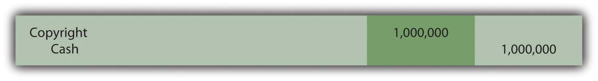
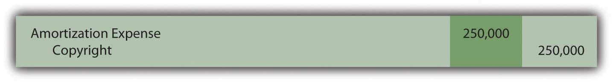

At the end of this section, students should be able to meet the following objectives:
Question: Not so many years ago, most large companies reported significant amounts of property and equipment on their balance sheets but considerably smaller figures for intangible assetsAn asset lacking physical substance that is expected to help generate future revenues for more than one year; common examples are patents, copyrights, and trademarks.. Businesses were often referred to as “bricks and mortar” operations because much of their money was invested in buildings, machinery, and similar long-lived tangible assets.
Today, the basic nature of many corporate operations has changed dramatically. As of June 30, 2009, Microsoft Corporation reported a total of $14.3 billion for its “goodwill” and “intangible assets, net” versus a mere $7.5 billion in “property and equipment, net of accumulated depreciation.” For Yahoo! Inc., the difference is similarly striking. On December 31, 2008, Yahoo! disclosed $3.9 billion of “goodwill” and “intangible assets, net” but only $1.5 billion in “property and equipment, net.”
The rise in the value and importance of intangible assets might well be the biggest change experienced in the reporting of businesses over the last ten to twenty years. The sudden growth of Internet and technology companies like Microsoft and Yahoo! has focused attention on the significance of ideas and innovation for achieving profits.
Financial accounting rules evolve as the nature of business moves forward over time. Not surprisingly, much debate has taken place recently concerning the methods by which intangible assets are reported in a set of financial statements. A relatively minor topic in the past has gained a genuine level of importance. Should an idea or an invention be reported in the same manner as a building or a machine? For financial accounting, that is a very important question. As a starting point for this discussion, the basic nature of intangible assets needs to be understood. What is an intangible asset and what are some common examples?
Answer: As the title implies, an intangible asset is one that lacks physical substance. It cannot be touched but is expected to provide future benefits for longer than one year. More specifically, it will assist the reporting company in generating revenues during future periods. Except for a few slight variations, intangible assets are reported in a manner similar to a building or equipment. Historical cost serves as the basis for reporting. If the intangible has a finite life, the depreciation process (although the term “amortization” is normally utilized in connection with intangibles) reclassifies this cost from asset to expense over that estimated period.
In creating the authoritative pronouncement Statement No. 141, Business Combinations (issued in 2001 and revised in 2007), FASB attempted to provide structure for the reporting process by placing all intangibles into six major categories:
Notice that in all cases (except for goodwill, which will be explained later in this chapter), each intangible asset is actually an established right of usage. For example, according to the Web site for the United States Copyright Office, a copyright provides its owner with the right to use “literary, dramatic, musical, artistic, and certain other intellectual works.” Similarly, the United States Patent and Trademark Office Web site explains that “a patent for an invention is the grant of a property right to the inventor.”
In simple terms, an intangible asset is usually a right that helps the owner to generate revenues.
Link to multiple-choice question for practice purposes: http://www.quia.com/quiz/2092962.html
Question: Intangible assets are accounted for in a manner that is similar to property and equipment. Assume that an automobile company is creating a television commercial for one of its new products. On January 1, Year One, the company pays $1 million cash to a famous musical group (such as The Rolling Stones) for the right to use a well-known song in this video. The band holds the legal copyright on this piece of music and agrees to share that right with the automobile company so that the song can be played in one or more commercials. What accounting is made by a company that acquires an intangible asset such as a copyright?
Answer: The buyer of an intangible asset prepares a journal entry that is basically identical to the acquisition of inventory, land, or a machine. As with all those other assets, the intangible is recorded initially at historical cost.
Figure 11.1 January 1, Year One—Acquisition of Right to Use Copyrighted Song
Many intangible assets have defined legal lives. For example, copyrights extend for seventy years beyond the creator’s life. Acquired intangibles (such as the copyright for this song) often have lives legally limited by the contractual agreement. However, the true useful life of most intangibles is generally only a small number of years. Few intangibles manage to help a company generate revenues for decades. AmortizationA mechanically derived pattern allocating an intangible asset’s cost to expense over the shorter of the legal life or useful life; it is the equivalent of depreciation but relates to intangible assets. of the cost should extend over the shorter of the asset’s useful life or its legal life.
To illustrate, assume that this piece of music is expected to be included by the automobile company in its commercials for the next four years and then a different advertising campaign will be started. Annual amortization is $250,000 ($1 million cost/4 year life) if the straight-line method is applied (which is normal for intangible assets).
Figure 11.2 December 31, Year One—First Year Amortization of Copyright Cost
At the end of the first year, the copyright appears on the balance sheet of the automobile company as $750,000, the remainder of its historical cost. Note that the credit in this adjusting entry is a direct decrease in the asset account. Although establishing a separate contra account (such as accumulated amortization) is permitted, most companies simply reduce the intangible asset balance because the utility is literally shrinking. Depreciation of a building or equipment does not mean that the asset is getting smaller; a four-story building remains a four-story building throughout its life. Reducing the building account would not reflect reality. In contrast, the above right to use this song did get smaller. The company went from holding a copyright to play this music in its commercials for an expected four years to a copyright that will only be used for three more years.
Question: In the above example, the automobile company acquired the right to use this music for $1 million. That was its historical cost, the figure to be reported for the asset on the company’s balance sheet. The number was objectively determined and the accounting straightforward. However, the artist who originally created the music (or his or her company) still holds the original copyright. As indicated by this sale, the rights to this music are extremely valuable. How does the creator report an intangible asset such as a copyright? Should the copyright to this piece of music now be reported by the artist (The Rolling Stones) at its proven value of $1 million?
Answer: Depending on the specific terms of the contract, the creator often continues to possess the copyright and maintains the asset on its own balance sheet. In most cases, the original artist only conveyed permission to the company to use this music for specific purposes or a set time period. However, the copyright does not appear on the creator’s books at its $1 million value; rather, it remains at historical cost less any amortization to date. That is the reporting basis for intangible assets according to U.S. GAAP in the same way as for land, buildings, and equipment.
Historical cost for copyrights and other similar intangibles typically includes attorney fees as well as any money spent for legal filings and registration with the appropriate authorities. Subsequently, such intangible assets are sometimes the subject of lawsuits if other parties assert claims to the same ideas and creations. The cost of a successful defense is also capitalized and then amortized over the shorter of the remaining legal life or the estimated useful life.
Link to multiple-choice question for practice purposes: http://www.quia.com/quiz/2092963.html
Following is a continuation of our interview with Robert A. Vallejo, partner with the accounting firm PricewaterhouseCoopers.
Question: Under U.S. GAAP, intangible assets with a finite life are reported at historical cost less any accumulated amortization recognized to date. Except in impairment cases, fair value is ignored completely. How are intangible assets reported when IFRS standards are applied?
Robert Vallejo: Unless a company chooses to revalue its intangible assets regularly (an option that is available under IFRS but rarely chosen in practice because it must then be done over time), the accounting under U.S. GAAP and IFRS is basically the same. After initial recognition under IFRS, intangible assets are carried at cost less accumulated amortization (as well as any impairment losses). If an active market is available, fair value of all similar intangible assets can be chosen but, again, that value must then be updated frequently. Per IAS 38, Intangible Assets, the method of amortization that is used should reflect the pattern in which the asset’s future economic benefits are expected to be realized by the entity. If that pattern cannot be determined reliably, the straight-line method of amortization must be used.
The reporting of intangible assets has grown in significance in recent years because of the prevalence and success of technology and electronics companies. For the most part, intangible assets provide a company with a right to use an idea, invention, artistic creation, or the like. Copyrights, patents, and trademarks are common examples. They are recorded at historical cost which is then amortized to expense over the shorter of the legal life or the useful life of the intangible. The accounting resembles that of property and equipment so that, for example, increases in value are not reported.